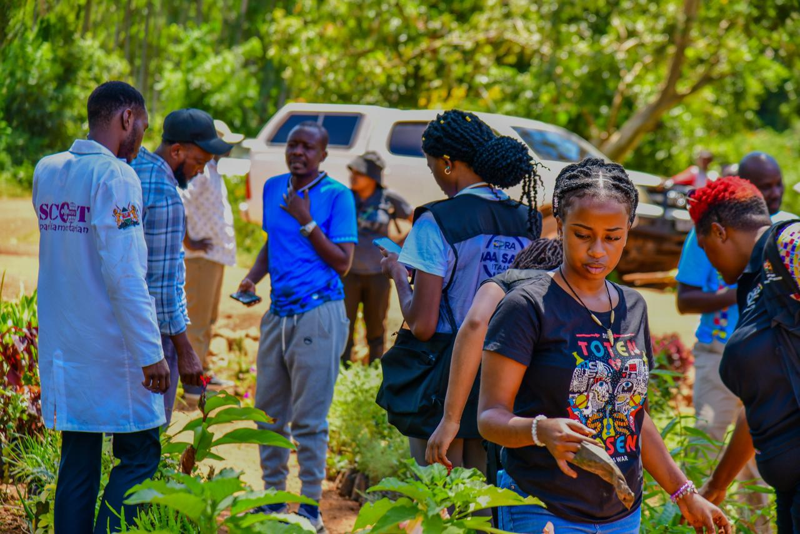
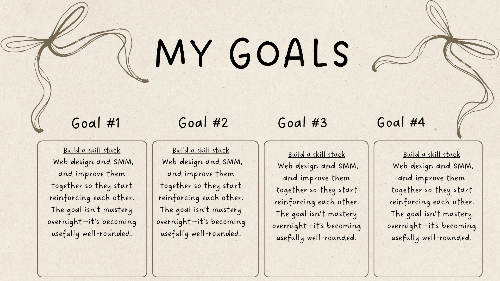
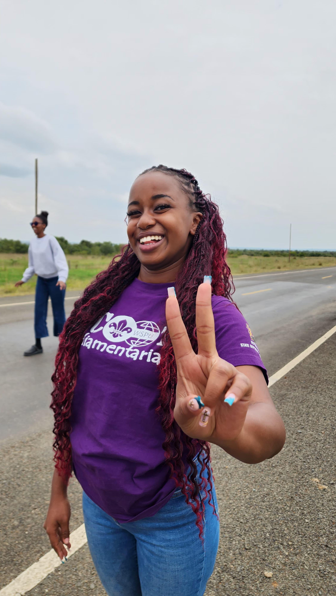
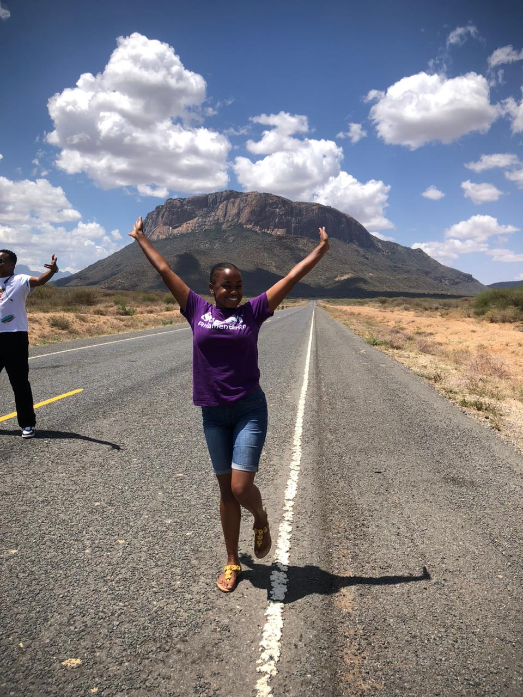
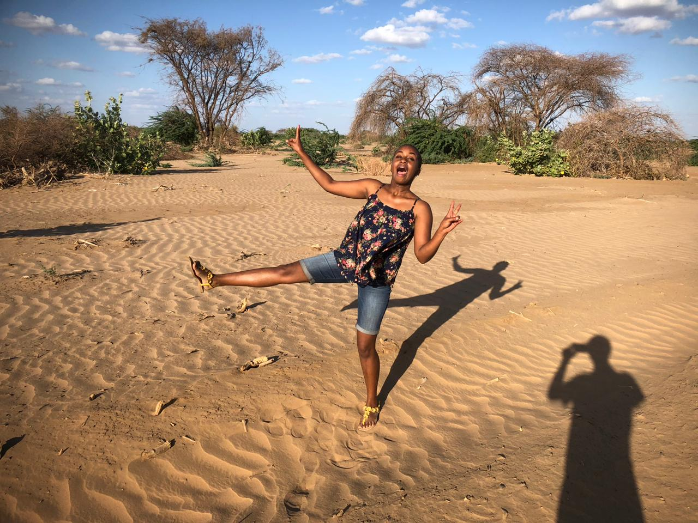
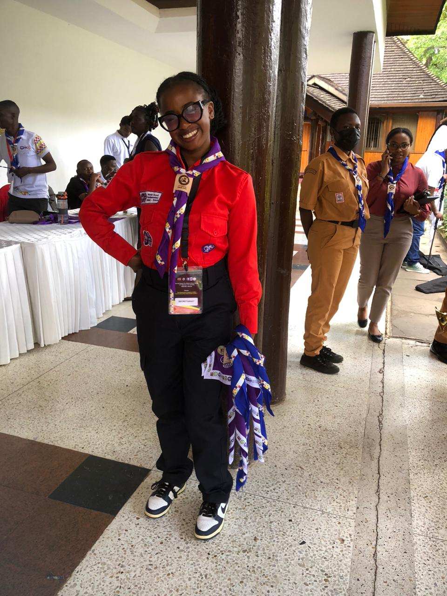
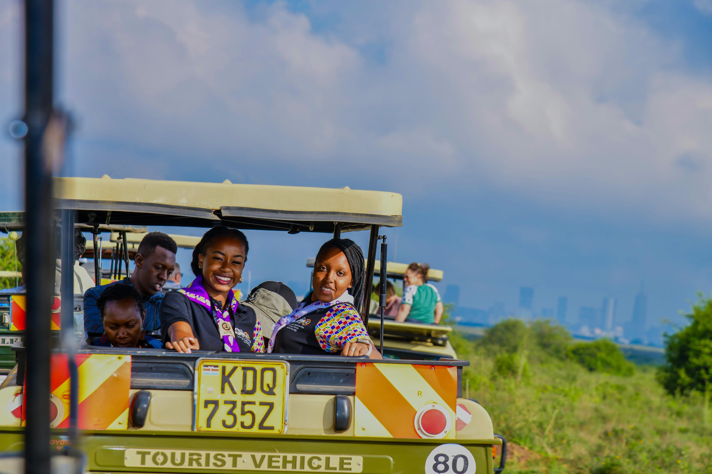

My name is Grace Wangechi. I was born in 2004, and my journey has been one of growth, curiosity, and becoming. I spent my early years at Little Wonder School, before moving to boarding school at Sacred Heart Primary in Class Five. After completing my KCPE, I joined Chinga Girls High School. I later pursued a Diploma in Business Information Technology at KCA University, graduating in 2025 with a credit. Currently, I’m continuing my studies, working towards my Bachelor’s in International Business Management. My professional journey began at the World Scout Parliamentary Union-Kenya, where I serve as the Climate Action Officer. That experience has exposed me to so much-different people, new environments, and opportunities to travel across Kenya. Truly, once a scout, always a scout. Alongside this, I’ve been building skills in virtual assistance and social media management — learning how to help brands communicate, grow, and connect in meaningful ways. I have a strong desire to become an entrepreneur and businesswoman. I dream of building and growing my own brand, Ngobo and developing my service-based platform, Errun . Beyond everything I do, I’m also a sister, a friend, and someone who deeply values connection and quality time. I’m naturally curious, always wanting to learn more, try new things, and grow into better versions of myself. At times, I feel the fear of failing or missing out — but that’s also what pushes me to keep going. I also love to cook. At one point, I dreamed of becoming a chef — and even though life took a different direction, that passion for creating hasn’t left me. It simply shows up in different ways now. This is still just the beginning for me.

Places I have explored.






Social media isn’t just posting; it’s storytelling, strategy, and connection.
I build clear direction so your brand shows up with purpose.
Visual storytelling that feels authentic and engaging.
Researching and identifying potential clients or audiences.
Supporting daily tasks, organization, and admin work.
Accurate and structured digital data management.
Want to see my work?
View My Work →